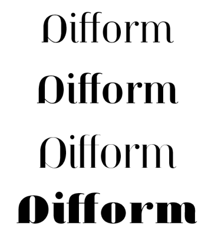
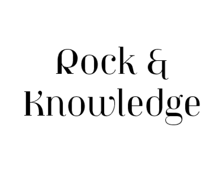
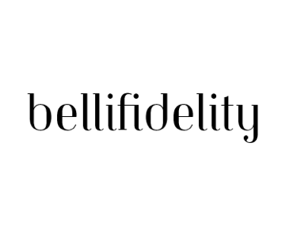
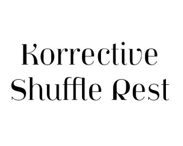
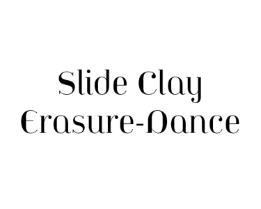
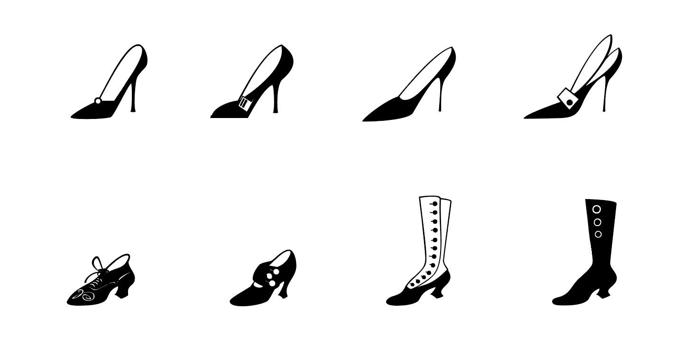

Overview
OT Roman
OT Italic
OT Bold
OT Bold Italic
OT Geometrique
OT Titling
OT Titling Italic
OT Ultra
OT Ultra Italic
Alternates
Long Stem
Ligatures
European characters
Extras
History
Jeanne Moderno is a revisionary type family.The font is a synthesis of
Bodoni Italic and 19th Century Ultra-Bold "Fat Faces", distilled with
personality taken from early 20th Century Modernists: the Futurists,
Dadaists, Suprematists, Constructivists.
Historically, Jeanne
Moderno could have appeared on the scene around 1918, after the First
World War, when new cultural movements, manifestos, theories and
countertheories shaped art, industry and society.
Spatter in a few
later influences, from De Stijl, the Bauhaus, the types of Herbert
Bayer, Josef Albers, Paul Renner; plus a twist of Art Deco and High
Fashion. Jeanne Moderno is a remanifestation of 19th + 20th Century
Modernist thinking; traditional + revisionist, raw and elegant!
Jeanne Moderno is best used for magazines, advertising, posters, flyers,
fashion reports, letterpress experiments, silkscreen endeavors and
exhibitions; not to mention DMV signage, paper money, revolutionary
political statements and formal declarations of peace or war.
The font is about the future, about the past. The Avant-Garde. Humanist
geometry + vintage footwear. Form, function, style, art and life. The
Jeanne Moderno fonts include: Western and Eastern European characters,
Stylistic Alternates, ligatures, and more.